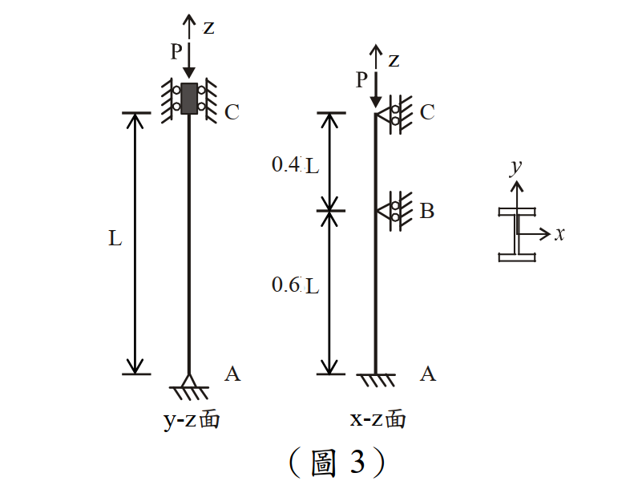
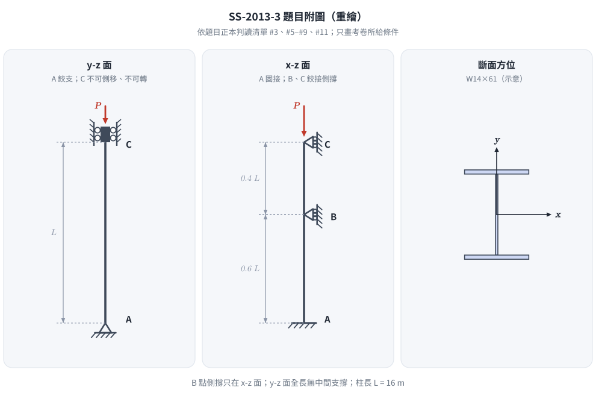
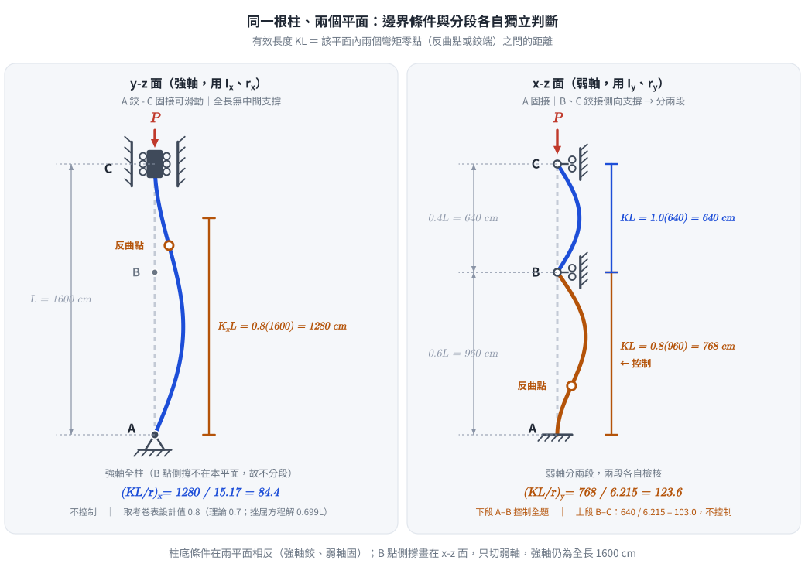
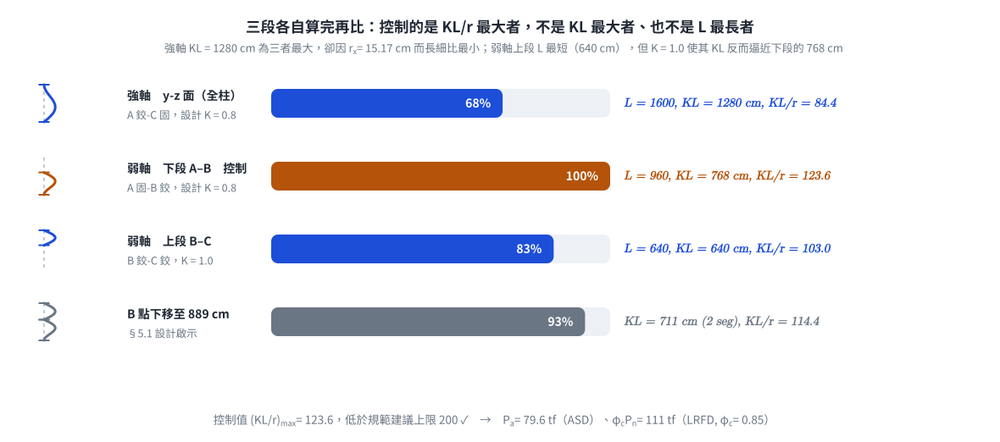

📄 題目正本：考卷原文・附圖・判讀清單（已確認）
SS-2013-3 題目正本
本檔只記錄考卷上寫了什麼、圖上畫了什麼，不含任何解法。解析見同資料夾
SS-2013-3.md。
判讀清單經使用者確認前，狀態為「待確認」；確認後本檔原則上不再修改（改動須回考卷原圖並記 log）。
| 項目 | 內容 |
|---|---|
| 考卷 | raw/exams/SS-2013_鋼結構設計.pdf 第 2 頁（全一張之背面），第三題 |
| 考年 | 民國 102 年（2013） |
| 配分 | 25 分（㈠ 15、㈡ 10） |
| 附圖 | 1 張（圖 3：y-z 面、x-z 面、斷面），SS-2013-3-fig-1.png；K 值表照錄於 §2 |
| 判讀狀態 | 已確認（2026-11-02 使用者確認，含「不確定」項之解讀；轉錄同日，PyMuPDF 110 dpi 全頁＋圖 3 500 dpi 局部目視，盲讀後才比對既有解析） |
1. 考卷原文（逐字）
三、如圖 3 所示之一受軸壓力 P 作用之鋼柱，已知鋼柱總長度為 16 m，柱底 A 點處及柱頂 C 點處之邊界條件，如圖 3 所示；另於柱中 B 點處的 x-z 面上有一鉸接之側向支撐。若此鋼柱採用 W14×61 型鋼，材料性質及相關斷面尺寸為：$E = 2{,}040$ tf/cm²，$F_y = 2.5$ tf/cm²；$A = 116$ cm²，$d = 35.3$ cm，$t_w = 0.952$ cm，$b_f = 25.4$ cm，$t_f = 1.64$ cm，$I_x = 26{,}700$ cm⁴，$I_y = 4{,}480$ cm⁴。
㈠試以容許應力設計法（ASD），求解該柱之容許壓力強度 $P_a$＝？（15 分）
㈡試以極限設計法（LRFD），求解該柱之設計壓力強度 $\phi_cP_n$＝？（10 分）
2. 考卷給的公式、附表與參數
題下附表照錄：
| 條件 | 邊界無側位移 | 邊界有側位移* | ||||
|---|---|---|---|---|---|---|
| 端點型式 | 固接-固接 | 鉸接-固接 | 鉸接-鉸接 | 固接*-固接 | 固接*-鉸接 | 自由端*-固接 |
| 理論 K 值 | 0.5 | 0.7 | 1.0 | 1.0 | 2.0 | 2.0 |
| 設計 K 值 | 0.65 | 0.8 | 1.0 | 1.2 | 2.0 | 2.1 |
- 本卷沒給 ASD／LRFD 柱公式與 $\phi_c$（卷內公式只有第二題萊梅厥公式、第四題 $B_1$、$B_2$、$C_m$、$P_{eK}$）；注意事項只有㈠㈡。
3. 附圖

圖面文字照錄：z；P；C；L；A；y-z面；z；P；C；0.4 L；B；0.6 L；A；x-z面；y；x；（圖 3）。
4. 判讀清單
「把握」標不確定者請優先確認；解讀類項目（題目用字的意思）另標「解讀」。
| # | 項目 | 判讀 | 圖上／題文依據 | 把握 |
|---|---|---|---|---|
| 1 | K 取理論或設計值 | 取表中設計值（2026-11-01 使用者已決定主答 $K = 0.8$，見 log FIX-SS-已勘誤抽樣） | 附表（解讀） | 確定 |
| 2 | 柱公式與 $\phi_c$ | 考卷未給，依規範（ASD $F_a$、LRFD $F_{cr}$、$\phi_c = 0.85$） | 卷面（解讀） | 確定 |
| 3 | 斷面方向 | 翼板水平、腹板垂直；$x$ 軸水平＝強軸、$y$ 軸垂直＝弱軸 | 斷面示意（500 dpi） | 確定 |
| 4 | 平面與軸 | y-z 面（變位沿 $y$）＝繞 $x$ 軸＝強軸；x-z 面（變位沿 $x$）＝繞 $y$ 軸＝弱軸 | 座標＋斷面（解讀） | 確定 |
| 5 | y-z 面 A | 三角形 → 鉸支 | 圖 3 左（500 dpi） | 確定 |
| 6 | y-z 面 C | 方塊夾在兩側滾輪牆之間 → 不可側移、不可轉動、可沿 z 滑動 | 圖 3 左（500 dpi） | 確定 |
| 7 | x-z 面 A | 斜線、無三角形 → 固接 | 圖 3 中（500 dpi） | 確定 |
| 8 | x-z 面 B | 三角形尖端貼柱＋滾輪＋斜線牆 → 鉸接側撐（不可側移、可轉）；距 A 0.6L、距 C 0.4L | 圖 3 中＋尺寸線 | 確定 |
| 9 | x-z 面 C | 同 B 之鉸接側撐 | 圖 3 中 | 確定 |
| 10 | 柱長 | $L = 16$ m（兩平面同） | 題文 | 確定 |
| 11 | B 側撐所在平面 | 只在 x-z 面，y-z 面全長無中間支撐 | 題文＋圖 3 左 | 確定 |
轉錄：2026-11-02（SS-U1-1 題目正本推廣・批 2）｜確認：2026-11-02 使用者確認
考題編號：SS-2013-3
主分類： SS-U1-1 拉力及壓力桿件
副分類： 無
設計法： 混合（ASD + LRFD）
標籤： 壓力桿件 有效長度 弱軸挫屈 強軸挫屈 分段側撐 迴旋半徑 ASD容許應力 LRFD設計強度 兩平面邊界不同 Cc判斷 λc 設計K值
1. 題目（考卷原文見題目正本）
考卷原文、公式／附表、附圖與判讀清單（已確認）見
SS-2013-3-problem.md。本節只列解題時最容易讀錯的地方與本解使用的記號；題意以題目正本為準。

圖 1 題目附圖重繪（依題目正本判讀清單 #3、#5–#9、#11）。兩個平面並排，柱底條件相反（y-z 鉸、x-z 固）且 B 側撐只在 x-z 面，攔下把 B 側撐用來切割強軸或兩平面邊界讀成同一組；解題用的有效長度見圖 2。
常見誤讀
| 項目 | 正確判讀 | 常見誤讀 |
|---|---|---|
| 兩平面柱底 | 強軸（y-z 面）A 鉸；弱軸（x-z 面）A 固 | 兩平面當成同一種支承 |
| y-z 面柱頂 C | 不可側移、不可轉 → 鉸-固，設計 $K = 0.8$ | 當成鉸接 |
| B 側撐 | 只在 x-z 面，距 A 0.6L | 拿去切割強軸 |
| K 值 | 取附表設計值 | 用理論值 0.7（舊版主答） |
本解記號： W14×61：$A = 116$ cm²、$I_x = 26{,}700$、$I_y = 4{,}480$ cm⁴；$L = 1600$ cm；$F_y = 2.5$、$E = 2040$ tf/cm²。
判讀圖解（解析自繪）

圖 2 同一根柱在兩個正交平面各自的邊界條件與挫屈模態；圖上的 $KL$ 就是該平面內兩個彎矩零點（鉸端或反曲點）之間的距離，反曲點位置由挫屈特徵方程 $\tan u = u$ 解出而非目測。攔錯： 把兩平面的柱底當成同一種支承（強軸實為鉸、弱軸實為固），或誤把 B 點側撐拿去切割強軸。
2. 考題核心精神與出題者意圖 (Core Concepts & Examiner's Intent)
核心觀念：兩個正交平面各自獨立判斷邊界與分段，把三個 $KL/r$ 都算出來，取最大者控制；再以同一個 $KL/r$ 分別跑 ASD 與 LRFD 兩套公式。
| 步驟 | ASD | LRFD |
|---|---|---|
| 1 | 計算 $(KL/r)_{\max}$（三段比較） | 計算 $(KL/r)_{\max}$（同一值） |
| 2 | 算 $C_c = \sqrt{2\pi^2E/F_y}$，判斷彈性／非彈性 | 算 $\lambda_c = \dfrac{KL/r}{\pi}\sqrt{F_y/E}$，判斷 $\lambda_c \lessgtr 1.5$ |
| 3 | 代入 $F_a$（含變動安全係數 FS） | 代入 $F_{cr} = 0.658^{\lambda_c^2}F_y$ |
| 4 | $P_a = F_a A$ | $\phi_c P_n = \phi_c F_{cr} A$ |
出題者測驗重點：
- 兩平面邊界不同：強軸平面柱底是鉸、弱軸平面柱底是固——粗心者會兩個平面用同一組邊界
- 弱軸要分段：B 點側向支撐把弱軸切成 0.6L 與 0.4L 兩段，兩段的 $K$ 值還不一樣
- 強軸不分段：B 點的支撐只在 x-z 面，對強軸（y-z 面）完全無效，強軸仍用全長 1600 cm
- ASD 非彈性段的安全係數 FS 是 $KL/r$ 的三次函數，不是常數
- LRFD 的 $\lambda_c$ 定義與 $0.658^{\lambda_c^2}$ 的指數運算
3. 解題戰略地圖與陷阱分析 (Strategic Roadmap & Trap Analysis)
作戰計畫：
Step 1 計算 rx, ry
Step 2 強軸（y-z面，全長1600cm）：A鉸 - C固（無側位移）→ 設計 K=0.8（理論 0.7）→ KL/rx
Step 3 弱軸（x-z面，分兩段）：
下段 A-B（A固 - B鉸，960cm）→ 設計 K=0.8（理論 0.7）→ KL/ry,下
上段 B-C（B鉸 - C鉸，640cm）→ K=1.0 → KL/ry,上
Step 4 取最大值 (KL/r)_max → 判斷設計區段
Step 5 ASD: Cc → FS → Fa → Pa
Step 6 LRFD: λc → Fcr → φcPn
關鍵陷阱：
⚠️ 陷阱 1（本題最主要）：兩個平面的柱底條件相反
左圖（y-z 面／強軸）A 是三角形鉸支承；右圖（x-z 面／弱軸）A 是斜線陰影固定端。
若把兩個平面都當成「A 固接」或都當成「A 鉸接」，強軸的 $K$ 就會取錯。
（本題碰巧強軸「鉸-固」與弱軸下段「固-鉸」的 $K$ 同為 0.8（理論 0.7），答案不變但敘述會錯——
若考官改動任一端條件，這個誤讀就會直接吃分。）⚠️ 陷阱 2：柱頂 C 在 y-z 面是「固接」不是「鉸接」
圖上 C 是一個實心方塊夾在兩排滾輪導軌之間：滾輪允許沿軸向（z）滑動，但方塊被兩片牆夾住，
轉動與側向位移都被拘束 → 屬「固接（無側位移）」。若誤判為鉸接（鉸-鉸），$K$ 會變成 1.0，
$KL/r_x = 105.5$，雖仍不控制，但推理已錯。⚠️ 陷阱 3：B 點側向支撐只影響弱軸
B 點的支撐畫在 x-z 面，只拘束 $x$ 向位移 → 只切割弱軸。強軸（y-z 面）中間無支撐，
有效長度仍為全長 1600 cm。誤把強軸也分段會嚴重高估承載力。⚠️ 陷阱 4：弱軸兩段的 $K$ 值不同，且「短的那段不一定控制」
下段 $K = 0.8$、$L = 960$ → $KL = 768$ cm；上段 $K = 1.0$、$L = 640$ → $KL = 640$ cm。
下段雖然 $K$ 較小，但長度較長，$KL$ 反而較大 → 下段控制。必須比 $KL$ 而非比 $L$。⚠️ 陷阱 5：ASD 的安全係數 FS 是三項式
非彈性區 $\text{FS} = \dfrac{5}{3} + \dfrac{3(KL/r)}{8C_c} - \dfrac{(KL/r)^3}{8C_c^3}$，
隨 $KL/r$ 由 1.667 變化到 1.917，不可用固定值 5/3 或 23/12。⚠️ 陷阱 6：理論 K 值 vs 設計 K 值
考卷同時給了兩列。本解主答採設計 K（0.8／1.0，AISC 建議值、偏保守）：$P_a = 79.6$ tf、$\phi_cP_n = 111$ tf；
若採理論 K（0.7／1.0）則為 96.8 tf、134 tf，高 18～21%（詳見 §5.2）。
作答時務必寫明採用哪一列。
3.5 變數層次分析（Variable Hierarchy Analysis）
複習提示：解題後，在每個卡住的知識點「卡關?」欄標記
⚠；第二次複習時只看有⚠的項目。
最終目標： W14×61 柱（兩平面邊界不同、弱軸分段）→ $(KL/r)_{\max}$ → ASD 容許壓力 $P_a$ 及 LRFD 設計強度 $\phi_c P_n$
主要公式（$\boxed{\phantom{x}}$ = 未知，待推導）
$$\boxed{r_x} = \sqrt{I_x/A}, \qquad \boxed{r_y} = \sqrt{I_y/A}$$
$$\boxed{\left(\frac{KL}{r}\right)_{\max}} = \max\!\left[\underbrace{\frac{0.8(1600)}{\boxed{r_x}}}_{\text{強軸全柱}},\;\underbrace{\frac{0.8(960)}{\boxed{r_y}}}_{\text{弱軸下段}},\;\underbrace{\frac{1.0(640)}{\boxed{r_y}}}_{\text{弱軸上段}}\right]$$
$$C_c = \sqrt{\frac{2\pi^2 E}{F_y}} \quad \text{(ASD 彈性／非彈性分界)}$$
$$\boxed{\text{FS}} = \frac{5}{3} + \frac{3\boxed{(KL/r)}}{8C_c} - \frac{\boxed{(KL/r)}^3}{8C_c^3}$$
$$\boxed{F_a} = \frac{\left[1 - \dfrac{\boxed{(KL/r)}^2}{2C_c^2}\right] F_y}{\boxed{\text{FS}}}, \qquad \boxed{P_a} = \boxed{F_a} \times A$$
$$\boxed{\lambda_c} = \frac{\boxed{(KL/r)}}{\pi}\sqrt{\frac{F_y}{E}}, \qquad \boxed{F_{cr}} = 0.658^{\boxed{\lambda_c}^2} F_y, \qquad \boxed{\phi_c P_n} = 0.85\,\boxed{F_{cr}}\,A$$
L1：題目直接給定
看到題目就能讀出的數字，不需要任何公式。
| 符號 | 數值 | 說明 |
|---|---|---|
| $E$ | 2,040 tf/cm² | 彈性模數 |
| $F_y$ | 2.5 tf/cm² | 降伏強度 |
| $A$ | 116 cm² | 斷面積 |
| $I_x$ | 26,700 cm⁴ | 強軸慣性矩 |
| $I_y$ | 4,480 cm⁴ | 弱軸慣性矩 |
| $L$ | 1,600 cm | 柱總長 |
| B 點位置 | $0.6L = 960$ cm（距 A） | 弱軸側向支撐點 |
| A（y-z 面／強軸） | 鉸支承 | 三角形符號 |
| C（y-z 面／強軸） | 固接（可軸向滑動、無側位移） | 方塊＋兩側滾輪導軌 |
| A（x-z 面／弱軸） | 固接 | 斜線陰影固定端 |
| B、C（x-z 面／弱軸） | 鉸接側向支撐 | 滾輪貼牆 |
| $K$ 值表 | 理論 0.5／0.7／1.0／…；設計 0.65／0.8／1.0／…（本解取設計值） | 考卷提供 |
L2：需知識點推導
需要知道公式名稱與適用條件，套入 L1 即可算出。
Step 1：斷面迴旋半徑
| 符號 | 公式／來源 | 卡關? |
|---|---|---|
| $r_x$ | $\sqrt{26700/116} = 15.17$ cm | |
| $r_y$ | $\sqrt{4480/116} = 6.215$ cm |
Step 2：三個有效長細比（採設計 $K$ 值）
| 符號 | 公式／來源 | 卡關? |
|---|---|---|
| $(KL/r)_x$ | $0.8(1600)/15.17 = 84.4$（強軸全柱；A 鉸-C 固，無側位移，設計 $K = 0.8$） | |
| $(KL/r)_{y,\text{下}}$ | $0.8(960)/6.215 = 123.6$（弱軸下段 A–B；A 固-B 鉸，設計 $K = 0.8$）← 控制 | |
| $(KL/r)_{y,\text{上}}$ | $1.0(640)/6.215 = 103.0$（弱軸上段 B–C；B 鉸-C 鉸，$K = 1.0$） | |
| $(KL/r)_{\max}$ | $123.6$ | |
| 細長比上限檢核 | $123.6 < 200$（規範建議上限）✓ |
Step 3：(一) ASD 容許壓力 $P_a$
| 符號 | 公式／來源 | 卡關? |
|---|---|---|
| $C_c$ | $\sqrt{2\pi^2(2040)/2.5} = 126.9$ | |
| 區段判定 | $123.6 < 126.9$ → 非彈性挫屈 | |
| FS | $5/3 + 3(123.6)/(8 \times 126.9) - 123.6^3/(8 \times 126.9^3) = 1.916$ | |
| $F_a$ | $[1-123.6^2/(2 \times 126.9^2)](2.5)/1.916 = 0.686$ tf/cm² | |
| $P_a$ | $0.686 \times 116 = 79.6$ tf |
Step 4：(二) LRFD 設計強度 $\phi_c P_n$
| 符號 | 公式／來源 | 卡關? |
|---|---|---|
| $\sqrt{E/F_y}$ | $\sqrt{2040/2.5} = 28.57$ | |
| $\lambda_c$ | $123.6/(\pi \times 28.57) = 1.377$ | |
| 區段判定 | $\lambda_c = 1.377 < 1.5$ → 非彈性挫屈 | |
| $F_{cr}$ | $0.658^{1.897} \times 2.5 = 1.130$ tf/cm² | |
| $\phi_c P_n$ | $0.85 \times 1.130 \times 116 = 111.4$ tf | |
| 局部挫屈檢核 | 翼板 $b_f/2t_f = 7.74 < 0.56\sqrt{E/F_y} = 16.0$；腹板 $h/t_w = 33.6 < 1.49\sqrt{E/F_y} = 42.6$ → 非細長 ✓ |
L3：深層知識（不懂就卡住）
| 知識點 | 說明 | 卡關? |
|---|---|---|
| 兩正交平面須各自獨立判斷 | 同一根柱在兩個平面可以有完全不同的支承與分段；本題柱底一鉸一固 | |
| 「y-z 面」對應哪個軸 | 變位在 $y$ 向 → 繞 $x$ 軸彎曲 → 用 $I_x$、$r_x$（強軸）。判別靠斷面圖的軸向定義 | |
| 側向支撐只作用於其所在平面 | B 點畫在 x-z 面 → 只切弱軸；強軸仍是全長 | |
| 分段後應比較 $KL$ 而非 $L$ | 下段 $K$ 小但長，$KL = 768 >$ 上段 $KL = 640$ → 下段控制 | |
| 「固接可滑動」的 $K$ 判定 | 轉動被拘束＋側向位移被拘束＋僅軸向可滑動 → 屬「固接、無側位移」端 | |
| ASD 非彈性挫屈安全係數 FS | FS 隨 $KL/r$ 由 5/3（$=1.667$）變化到 23/12（$=1.917$），是三項式而非常數 | |
| LRFD $\lambda_c$ 的物理意義 | $\lambda_c = \sqrt{F_y/F_e}$；$\lambda_c \le 1.5$ 用 $0.658^{\lambda_c^2}$，$>1.5$ 用 $0.877/\lambda_c^2$ | |
| 殘留應力對非彈性挫屈的影響 | LRFD 的 $0.658$ 曲線與 ASD 的 $C_c$ 都隱含殘留應力（約 $0.5F_y$）效應 | |
| 理論 K 值與設計 K 值的取捨 | 實際支承難達理想固接／鉸接，AISC 建議用設計值（較大、偏保守）；本解主答採設計值 | ⚠ |
4. 步驟化詳細計算過程 (Step-by-Step Detailed Calculation)
一、斷面迴旋半徑
$$r_x = \sqrt{\frac{I_x}{A}} = \sqrt{\frac{26{,}700}{116}} = \sqrt{230.2} = 15.17 \ \text{cm}$$
$$r_y = \sqrt{\frac{I_y}{A}} = \sqrt{\frac{4{,}480}{116}} = \sqrt{38.62} = 6.215 \ \text{cm}$$
二、強軸（y-z 面）有效長度
邊界： 柱底 A 鉸支承、柱頂 C 固接（可軸向滑動、側向位移被拘束），中間無支撐。
依考卷表：端點型式「鉸接-固接」、「邊界無側位移」→ 理論 $K = 0.7$、設計 $K = 0.8$（本解採用）
$$\left(\frac{KL}{r}\right)_x = \frac{0.8 \times 1600}{15.17} = \frac{1280}{15.17} = 84.4$$
策略註解： 強軸用全長 1600 cm。B 點的側向支撐畫在 x-z 面，對本平面（y-z）沒有任何作用。
三、弱軸（x-z 面）有效長度（分段計算）
邊界： 柱底 A 固接；B 點（距 A $= 0.6L = 960$ cm）與柱頂 C 鉸接側向支撐。
下段 A–B（長 $0.6L = 960$ cm）： A 固接、B 鉸接 → 「鉸接-固接、無側位移」→ 設計 $K = 0.8$（理論 0.7）
$$\left(\frac{KL}{r}\right)_{y,\text{下}} = \frac{0.8 \times 960}{6.215} = \frac{768}{6.215} = \boxed{123.6}$$
上段 B–C（長 $0.4L = 640$ cm）： B 鉸接、C 鉸接 → 「鉸接-鉸接」→ $K = 1.0$（理論、設計值相同）
$$\left(\frac{KL}{r}\right)_{y,\text{上}} = \frac{1.0 \times 640}{6.215} = \frac{640}{6.215} = 103.0$$
四、控制長細比
$$\left(\frac{KL}{r}\right)_{\max} = \max(84.4,\; 123.6,\; 103.0) = \boxed{123.6}$$
控制段：弱軸下段（A–B），$KL/r = 123.6$
$$123.6 < 200 \quad \text{（壓力桿件細長比上限）} \ \checkmark$$

圖 3 三段各自算出 $KL/r$ 之後再比大小。攔錯： 拿物理長度 $L$ 或有效長度 $KL$ 互比而選錯控制段——強軸 $KL = 1280$ cm 為三者最大，卻因 $r_x$ 大而不控制；弱軸上段 $L = 640$ cm 最短，卻因 $K = 1.0$ 而 $KL$ 逼近下段。
五、(一) ASD 容許壓力強度 $P_a$
計算 $C_c$（彈性／非彈性界限長細比）：
$$C_c = \sqrt{\frac{2\pi^2 E}{F_y}} = \sqrt{\frac{2 \times 9.8696 \times 2040}{2.5}} = \sqrt{\frac{40{,}268}{2.5}} = \sqrt{16{,}107} = 126.9$$
判斷區段： $KL/r = 123.6 < C_c = 126.9$ → 非彈性挫屈（Inelastic Buckling）
計算安全係數 FS（隨 $KL/r$ 變化）：
$$\text{FS} = \frac{5}{3} + \frac{3(KL/r)}{8C_c} - \frac{(KL/r)^3}{8C_c^3}$$
$$= 1.6667 + \frac{3 \times 123.6}{8 \times 126.9} - \frac{123.6^3}{8 \times 126.9^3} = 1.6667 + \frac{370.8}{1015.2} - \frac{1{,}888{,}232}{16{,}348{,}385}$$
$$= 1.6667 + 0.3652 - 0.1155 = \boxed{1.916}$$
計算容許應力 $F_a$：
$$F_a = \frac{\left[1 - \dfrac{(KL/r)^2}{2C_c^2}\right] F_y}{\text{FS}} = \frac{\left[1 - \dfrac{123.6^2}{2(126.9)^2}\right] \times 2.5}{1.916}$$
$$= \frac{\left[1 - \dfrac{15{,}277}{32{,}207}\right] \times 2.5}{1.916} = \frac{(1 - 0.4743) \times 2.5}{1.916} = \frac{1.314}{1.916} = \boxed{0.686 \ \text{tf/cm}^2}$$
容許壓力強度：
$$\boxed{P_a = F_a \times A = 0.686 \times 116 = 79.6 \ \text{tf}}$$
六、(二) LRFD 設計壓力強度 $\phi_c P_n$
計算 $\lambda_c$（無量綱長細參數）：
$$\sqrt{\frac{E}{F_y}} = \sqrt{\frac{2040}{2.5}} = \sqrt{816} = 28.57$$
$$\lambda_c = \frac{KL/r}{\pi}\sqrt{\frac{F_y}{E}} = \frac{123.6}{\pi \times 28.57} = \frac{123.6}{89.73} = \boxed{1.377}$$
判斷 $F_{cr}$ 公式： $\lambda_c = 1.377 < 1.5$ → 非彈性挫屈
$$\lambda_c^2 = 1.377^2 = 1.897$$
$$0.658^{1.897} = e^{1.897 \ln 0.658} = e^{1.897(-0.4187)} = e^{-0.7942} = 0.4520$$
$$F_{cr} = 0.4520 \times 2.5 = 1.130 \ \text{tf/cm}^2$$
局部挫屈檢核（不可略）：
$$\text{翼板（無側支撐板元）：}\ \frac{b_f}{2t_f} = \frac{25.4}{2(1.64)} = 7.74 \;<\; 0.56\sqrt{\frac{E}{F_y}} = 0.56(28.57) = 16.0 \ \checkmark$$
$$\text{腹板（有側支撐板元）：}\ \frac{h}{t_w} = \frac{35.3 - 2(1.64)}{0.952} = 33.6 \;<\; 1.49\sqrt{\frac{E}{F_y}} = 1.49(28.57) = 42.6 \ \checkmark$$
兩者均為非細長斷面，故無需折減（$Q = 1.0$），$F_{cr}$ 可直接採整體彎曲挫屈值。
設計壓力強度（台灣現行規範 $\phi_c = 0.85$）：
$$\boxed{\phi_c P_n = 0.85 \times F_{cr} \times A = 0.85 \times 1.130 \times 116 = 111.4 \approx 111 \ \text{tf}}$$
七、結果彙整
| 量 | 數值 |
|---|---|
| $r_x$ | 15.17 cm |
| $r_y$ | 6.215 cm |
| $(KL/r)_x$（強軸全柱，A 鉸-C 固，設計 $K = 0.8$） | 84.4 |
| $(KL/r)_{y,\text{下}}$（弱軸下段，A 固-B 鉸，設計 $K = 0.8$） | 123.6 ← 控制 |
| $(KL/r)_{y,\text{上}}$（弱軸上段，B 鉸-C 鉸，$K = 1.0$） | 103.0 |
| $C_c$ | 126.9 |
| FS | 1.916 |
| $F_a$ | 0.686 tf/cm² |
| $P_a$（ASD） | 79.6 tf |
| $\lambda_c$ | 1.377 |
| $F_{cr}$ | 1.130 tf/cm² |
| $\phi_c P_n$（LRFD，$\phi_c = 0.85$） | 111 tf |
| （對照：理論 K 0.7） | $P_a$ 96.8 tf、$\phi_cP_n$ 134 tf（§5.2） |
5. 關鍵爭議點與進階探討 (Critical Issues & Advanced Discussion)
5.1 為何弱軸下段控制？——比 $KL$，不比 $L$
| 段 | $K$ | $L$ (cm) | $KL$ (cm) | $KL/r_y$ |
|---|---|---|---|---|
| 下段 A–B | 0.8 | 960 | 768 | 123.6 ← 控制 |
| 上段 B–C | 1.0 | 640 | 640 | 103.0 |
上段物理長度較短（640 < 960 cm），但兩端皆鉸（$K = 1.0$）；下段雖有固接底端（$K = 0.8$）卻長得多，
$KL$ 反而較大。「短的那段不一定安全」是本題的設計直覺重點。
設計啟示： 若要提升承載力，最有效的是把 B 點側撐往下移（讓兩段的 $KL$ 相等）。
令 $0.8a = 1.0(1600-a)$ 得 $a = 889$ cm，此時兩段 $KL = 711$ cm、$KL/r_y = 114.4$，$P_a$ 由 79.6 提升至 90.0 tf（約 13%）；
若在弱軸再加一道側撐（三分點），控制 $KL/r$ 降到 85.8（上兩段），$P_a \approx 118.9$ tf，提升約 49%。
5.2 理論 K 值 vs 設計 K 值：答案差 18%
考卷同時給出兩列 $K$ 值，因此必須交代採用哪一列：
| 採用 | $(KL/r)_x$ | $(KL/r)_{y,\text{下}}$ | $(KL/r)_{y,\text{上}}$ | 控制值 | $F_a$ | $P_a$ | $\lambda_c$ | $F_{cr}$ | $\phi_cP_n$ |
|---|---|---|---|---|---|---|---|---|---|
| 設計 K（0.8／0.8／1.0）← 本解主答 | 84.4 | 123.6 | 103.0 | 123.6 | 0.686 | 79.6 tf | 1.377 | 1.130 | 111 tf |
| 理論 K（0.7／0.7／1.0） | 73.8 | 108.1 | 103.0 | 108.1 | 0.834 | 96.8 tf | 1.205 | 1.362 | 134 tf |
如何選？
- 實際柱底不可能是完美固接（基礎必有轉動）、柱頂也難達完美束制；理論值會低估 $K$ → AISC 建議採設計 K 值，答案較保守。本解主答採設計 K 值。
- 若認為圖 3 的理想化符號（純鉸、純固定端、滾輪導軌）即代表理想條件，也有解答採理論 K 值（$P_a = 96.8$ tf、$\phi_cP_n = 134$ tf），比設計值高 18～21%，偏不保守。
- 考場作法： 主答採設計 K 值，並在旁註明「若採理論 K 值（0.7）則 $P_a = 96.8$ tf、$\phi_cP_n = 134$ tf」。
兩列都給了，兩種答案都應該被接受，但不寫明依據才會被扣分。
5.3 依最新規範計算的差異
| 項目 | 本題所用（台灣現行規範，民國 99 年版） | AISC 360-16／-22 | 本題影響 |
|---|---|---|---|
| LRFD $\phi_c$ | 0.85 | 0.90 | $\phi_cP_n$：111 → 118 tf（+6%） |
| LRFD 界限判準 | $\lambda_c \le 1.5$ | $KL/r \le 4.71\sqrt{E/F_y} = 134.5$ | 等價（$1.5\pi = 4.712$），本題 123.6 < 134.5，同屬非彈性 |
| LRFD $F_{cr}$ 式 | $0.658^{\lambda_c^2}F_y$ | $\left[0.658^{F_y/F_e}\right]F_y$ | 完全相同（$F_y/F_e \equiv \lambda_c^2$）；$F_e = \pi^2E/(KL/r)^2 = 1.319$ tf/cm²，$F_y/F_e = 1.896$ → $F_{cr} = 1.130$ ✓ |
| ASD 架構 | $F_a$（$C_c$＋變動 FS） | 統一：$P_a = F_{cr}A/\Omega$，$\Omega = 1.67$ | $F_{cr}/\Omega = 1.130/1.67 = 0.677$ tf/cm² → $P_a = 78.5$ tf（比 79.6 低 1.4%） |
| 細長比上限 | 建議 $KL/r \le 200$ | 同（E2 條文說明） | 123.6 ✓ |
結論： 台灣現行有效版本仍為民國 99 年（2010）修正版，$\phi_c$ 仍是 0.85；參照 AISC 360-16 的修正草案
（建研所研究案）已完成但尚未發布施行。因此考場請照 $\phi_c = 0.85$ 作答（$\phi_c P_n = 111$ tf）；
若為實務設計並採 AISC 360-22，則為 118 tf。ASD 兩套架構的結果只差 1.4%，可互為驗算。
5.4 ASD 與 LRFD 結果的合理性交叉檢核
$$\frac{\phi_c P_n}{P_a} = \frac{111.4}{79.6} = 1.40$$
若以典型載重組合 $P_u \approx 1.4 P_{service}$（$D:L = 1:1$ 時 $\dfrac{1.2+1.6}{2} = 1.4$）反推：
$$P_{service,\text{允許}} = \frac{111.4}{1.4} = 79.6 \ \text{tf} \approx P_a = 79.6 \ \text{tf} \quad \checkmark$$
兩法給出幾乎相同的可用服務載重，代表計算沒有量級錯誤——這是考場上最快的自我檢查。
5.5 ASD 安全係數的設計哲學
$$\text{FS}\big|_{KL/r = 0} = \frac{5}{3} = 1.667, \qquad \text{FS}\big|_{KL/r = C_c} = \frac{23}{12} = 1.917$$
本題 FS = 1.916，已非常接近彈性挫屈邊界的 1.917（因 $KL/r = 123.6$ 已接近 $C_c = 126.9$）。
物理意義： 長柱的挫屈行為對初始缺陷與殘留應力更敏感、離散度更大，故規範給較大的安全係數。
解析完成時間：2026-04-23
修正日期：2026-08-22（依考卷圖 3 逐一改正兩平面之邊界判讀：強軸為「A 鉸-C 固接可滑動」、弱軸柱底為「固接」；修正 $F_a$ 0.835→0.834、$P_a$ 96.9→96.8；補設計 K 值對照與最新規範 $\phi_c = 0.90$ 對照）
圖解補繪：2026-08-29（向量圖，腳本 gen_SS-2013-3.py，可重跑）
修正日期：2026-11-01（依使用者決定，主答改採考卷 K 值表之設計 K 值（強軸、弱軸下段 0.7 → 0.8，上段 1.0 不變）：控制 $KL/r$ 108.1 → 123.6、FS 1.909 → 1.916、$F_a$ 0.834 → 0.686、$P_a$ 96.8 → 79.6 tf；$\lambda_c$ 1.205 → 1.377、$F_{cr}$ 1.362 → 1.130、$\phi_cP_n$ 134 → 111 tf；理論 K 結果移為 §5.2 對照，理由為 AISC 建議設計值、實際支承難達理想、偏保守；§5.1 最佳側撐位置 941 → 889 cm、§5.3 AISC 360 對照、§5.4 交叉檢核同步重算；圖 2、圖 3 與 gen_SS-2013-3.py 同步。驗證：Python 重算 ASD／LRFD 兩法、交叉檢核 $\phi_cP_n/1.4 = 79.6 \approx P_a$）
驗證狀態：unverified
修正日期：2026-11-02（§1 全文重述改為指向題目正本 SS-2013-3-problem.md（已確認）＋常見誤讀＋本解記號，§1 內自繪向量圖保留於「判讀圖解」；解題內容與答案不變）
修正日期：2026-11-03（§1 補入題目附圖重繪 figs/SS-2013-3-fig-1-problem.svg（依已確認的題目正本判讀清單，腳本 gen_SS-2013-3.py，可重跑）；解題內容與答案不變）